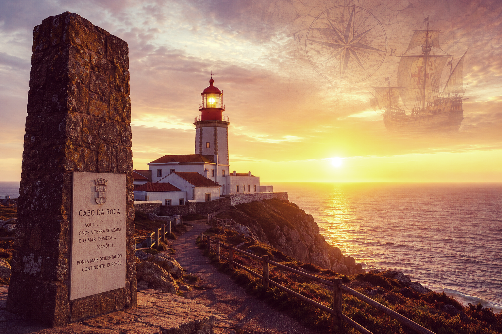
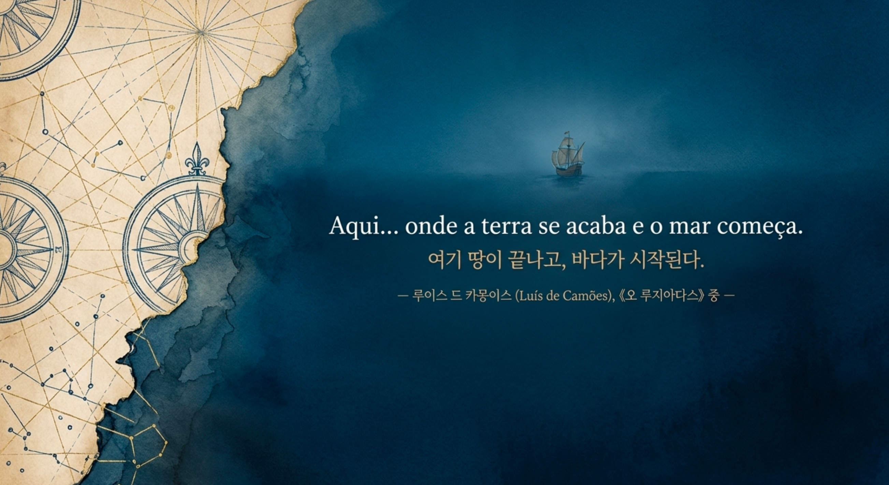

호카곶의 절벽에 서면, 누구나 한 번쯤 같은 생각을 합니다.
"여기가 끝이구나."
하지만 이 바다를 삶의 터전으로 삼았던 사람들에게 그곳은 끝이 아니었습니다. 그들에게 바다는 두려움의 대상이면서도, 동시에 삶으로 이어지는 유일한 길이었습니다.
그래서 바이킹도 바다를 건넜습니다. 아랍 상인들도 인도양을 항해했습니다. 중국도 명나라 시기 정화의 원정이 있었습니다. 지중해는 고대부터 수천 년 동안 배가 다녔습니다. 노르드인의 북아메리카 도달이라는 놀라운 항해를 했습니다. 그러니까 "바다에 나가는 것" 자체는 새로운 일이 아니었습니다.
하지만 그 항해는 정착이나 지속적인 교역망으로 이어지지 못했습니다.
반면 포르투갈은 아프리카 서해안을 따라 내려가 희망봉을 돌아 인도까지 가는 지속 가능한 해상 네트워크를 만들었습니다. 이게 역사적인 차이입니다. 그들에게 대서양은 '미지의 대양'을 국가 전략으로 만든 대혁명이었습니다. 바이킹은 바다가 건널 수 있다는 것을 증명했다면, 포르투갈은 그 바다를 통해 세계를 연결하는 길로 만든 사람들이었습니다.
저는 '여기 땅이 끝나고 바다가 시작된다.'는 그 한 문장에 이끌려 호카곶을 찾았습니다.
제게, 호카곶은 특별한 곳입니다. 2013년, 구글 저장소가 있다는 것을 모르는 시점에 노트북이 고장났고, 믿고 맡겼던 업체는 복구는 커녕 남아 있던 것마저 잃게 만들었습니다.
수 년의 시간이 한순간에 사라지면서 휘청거렸습니다. 좌절은 자기 비난으로 이어졌습니다.
"백업을 소홀히 하더니 모두 네 자업자득이다."
"네 까짓게 하는 일이 다 그렇지."
그 시간은 제게 절망의 바닥처럼 느껴졌습니다.
온 몸에 힘주며 달렸던 시간이 와르르 무너져 버렸고, '맘대로 살아볼까'라는 유혹을 받을 때 즈음, 우연히 노르웨이 북부 사람들의 다큐멘터리를 보게 되었죠.
그들의 거센 항로를 피하지 않고 살아내는 정신, 폭풍을 통과하며 살고 있는 사람들이란 이야기에 정신이 번쩍 들었습니다. 그 때 눈에 들어 온 빨간 색 로르부. 그리고 얼마 지나지 않아 카몽이스의 한 문장을 만났습니다.
"여기 땅이 끝나고 바다가 시작된다."
알 수 없는 강력한 이끌림을 느꼈습니다. 그건 제 안에 여전히 꺾이고 싶지 않은 마음을 두드렸습니다.
"팔자타령만 하고 있지 않겠다는 생의 의지." "잃어버린 것에 집착하며 바닥만 쳐다보면서 더 이상 길이 없다"며 포기하던 습관을 이제는 끝낼 때가 되었다고 말하는 것 같았습니다. 사고의 전환을 가져오는 바람의 혁명이었습니다. 그렇게 말하는 사람이 있다는 사실은 묘한 안도감을 주었습니다.
그렇게 말이 통하는 사람을 찾아가듯 호카곶으로 향했습니다.

그리고 나중에야 알았습니다.
영국에 셰익스피어, 이탈리아에는 단테가 있다면 포르투갈에는 카몽이스(Luís Vaz de Camões)가 있습니다. 그는 16세기 포르투갈이 세상의 절반을 가졌던 패권 국가 시절에 포르투갈어권 문학 역사상 가장 위대한 작가였습니다.
그는 책상에서 시를 쓴 사람이 아니었습니다. 젊은 시절 군인으로 북아프리카에서 전투를 치르다가 오른쪽 눈 하나를 잃었고, 인도로, 마카오로, 다시 아프리카를 거쳐 포르투갈로 돌아왔습니다. 경계를 수없이 건너면서 온 몸으로 살아낸 저력이 몸에 벤 사람이었습니다. 그의 《Os Lusíadas》의 한 줄은 삶의 철학이 반영된 것이고, 그 한 줄이 저를 끌어당긴 것이었습니다. 그가 무엇을 잃고도 다시 일어섰는지, 그 결을 하나씩 따라가 보고 싶었습니다.
그의 인생에서 가장 유명한 4가지 비화가 여기 있습니다.
1. 한쪽 눈을 잃은 외눈박이 전사
카몽이스의 초상화를 보면 항상 오른쪽 눈을 감고 있거나 가리고 있습니다. 젊은 시절 그는 몰락한 하급 귀족 가문 출신으로 생계를 위해 군인이 되었습니다. 1549년 북아프리카 세우타(Ceuta)에서 무어인들과 전투를 벌이던 중, 적의 포탄 파편(또는 창)이 눈에 박히는 큰 부상을 입고 오른쪽 시력을 영원히 상실했습니다.
2. 사랑 때문에 겪은 유배와 감옥 생활
그는 리스본 왕실 조정에서 시를 쓰며 활동했으나, 성격이 매우 불 같고 보헤미안 기질이 강했습니다. 왕의 누이인 도나 마리아 왕녀를 사랑했다는 추문부터 시작해 고위 귀족의 여인들과 스캔들을 일으켜 궁정에서 쫓겨나기도 했습니다. 1552년에는 리스본 거리에서 왕실 관원과 시비가 붙어 칼로 찌르는 대형 사고를 쳤고, 이로 인해 체포되어 감옥에 갇혔습니다. 결국 왕의 사면을 받는 조건으로 인도 고아(Goa)로 강제 징집되듯 떠나게 됩니다.
3. "연인 대신 원고를 구했다" – 기적의 난파(naufrágio)
인도와 마카오에서 관직과 군 생활을 이어가던 그는 '디나메네(Dinamene)'라는 중국계 여성과 깊은 사랑에 빠졌습니다. 이후 포르투갈로 돌아오던 중 메콩강 하구에서 비극적인 난파 사고를 당하게 됩니다. 배가 가라앉는 절체절명의 순간, 카몽이스는 한쪽 손으로 평생을 바쳐 쓴 《우스 루지아다스》의 친필 원고를 높이 치켜들고 한 손으로만 헤엄쳐 살아남았습니다. 하지만 안타깝게도 그가 목숨처럼 사랑했던 연인 디나메네는 이 사고로 익사하고 말았습니다. 그는 살아남았지만 평생 이 상처를 가슴에 묻고 살았습니다.
4. 제국의 영웅, 그러나 쓸쓸한 아사(餓死)
우여곡절 끝에 1570년 고국 포르투갈로 돌아와 1572년 마침내 국왕 세바스티앙에게 책을 바치고 소액의 연금을 받게 되었습니다. 하지만 1578년 국왕이 친정 나선 전투에서 전사하고 포르투갈 제국이 스페인에 합병되는 국가적 재앙이 닥치면서 그의 연금마저 끊겼습니다.
온 몸으로 처절하게 삶과 맞섰지만 쓸쓸한 죽음을 맞이했습니다. 하지만, 저는 그가 실패했다고 생각하지 않습니다. 그가 남긴 그 문장은 전 세계 사람들의 마음에 울림을 주고, 그들을 땅끝으로 끌어당깁니다.
새로운 길은 언제나 새로운 시선에서 시작되었습니다. 바이킹도 그랬고, 엔히크도 그랬고, 카몽이스도 그랬습니다.
엔히크 항해왕자는 "배를 띄워 보자." 라고 말한 사람이 아닙니다. 그는 항해학교를 만들고, 지도 제작자를 모으고, 천문학자를 초청하고, 선박을 개량하고, 항해 기록을 축적했습니다. 즉, 경험을 시스템으로 만든 사람입니다. 그래서 포르투갈은 한 번 성공한 것이 아니라, 성공을 반복할 수 있었습니다.
카몽이스는 항해를 발명하지 않았습니다. 그는 그 시대 포르투갈 사람들이 이루어 낸 '바다로 세계가 연결된 시대'를 한 편의 서사시로 남겼습니다. 그는 바다를 향해 떠나라고 말한 사람이 아니었습니다. 이미 수백 년 동안 바다를 살아낸 사람들의 시간을 한 문장으로 남긴 사람이었습니다. 그래서 《루지아다스》는 바스쿠 다 가마 개인의 전기가 아니라, 포르투갈이 바다를 통해 세계와 만난 시대의 서사입니다.
대항해 시대를 이야기하면 항상 신대륙 향신료 황금 식민지를 떠올립니다. 하지만 그 모든 것보다 먼저 일어난 일은 시선의 변화였습니다. 누군가가 처음으로 "저 바다는 끝이 아닐지도 모른다." 라고 생각해야 했습니다. 그 한 생각이 세계를 바꾸었습니다.
결국 그가 바꾼 것은 사람들의 시선이었습니다. "바다는 두려움의 끝이 아니라, 길의 시작이다." 이 사고의 전환이 국가를 움직였습니다.
융은 상징을 발명하는 것이 아니라, 상징이 의식에 떠오르는 순간을 중요하게 보았습니다. 상징은 억지로 붙이는 해석이 아니라, 삶을 살아낸 뒤 어느 날 "아, 이거였구나." 하고 스스로 모습을 드러내는 것입니다.
로포텐에서 시작된 시간은 북해에서 끝나지 않았습니다. 스톡피시가 바칼라우가 되어 포르투갈에 닿은 것입니다. 그리고 그것은 양쪽 끝에서 모두 시간을 필요로 한다는 공통점을 가지고 있습니다. 스톡피시는 로포텐에서 말리는 시간을 필요로 하고, 바칼라우는 포르투갈에서 다시 불리는 시간을 필요로 합니다. 바다는 한 나라의 식탁을 넘어, 한 시인의 언어까지 이어졌습니다.
이건 누군가가 의도해서 만든 서사가 아닙니다. 시간이 뒤늦게 드러낸 연결입니다.
우리에게 '끝'이라고 쓰인 곳은, 누군가에게는 '길'이 시작되는 곳입니다.
저는 한참 뒤에야 그 길을 거슬러 걸으며, 제가 시간을 따라 여행하고 있었다는 사실을 알게 되었습니다.
그곳에서 만난 것은 유럽의 끝이 아니었습니다.
호카곶이 제게 알린 것은
"여기 한 세계가 끝나고,
새로운 시선이 시작된다."는 것이었습니다.